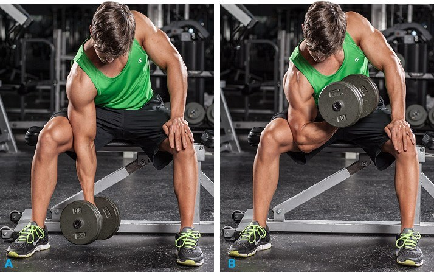

Concentration Curls
- Equipment Needed:
- Dumbbell
- Bench
- Steps to perform:
- Sit on edge of bench with dumbbell on ground in front of you
- With palm facing up, grasp dumbbell and place elbow on the leg of the same side as the hand you are using
- Starting with the dumbbell down near the floor, bending only at elbow, raise dumbbell up towards chest
- Lower dumbbell back down towards floor and repeat until desired number of reps are completed